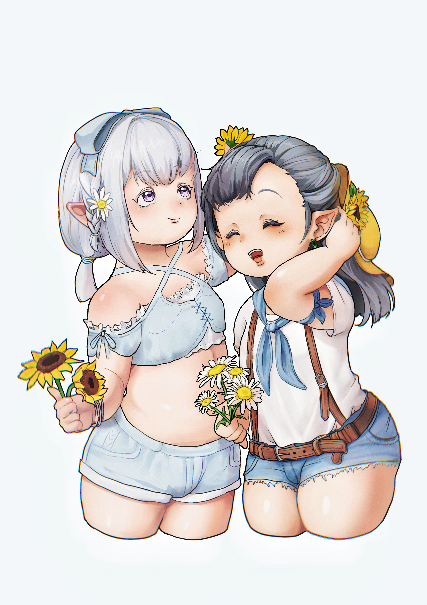

我们之间的距离很近又很远、清晰却又朦胧。
每当我仰望着星空，看向天上这颗皎洁明月时，忍不住会去想我们之间究竟可以走多远？
（然而成都盆地的原因雾天比较多，通常都看不到，乐）
又或者会不会在某处路口停下？但我知道不管我们身处何地，抬头看到的总是同一片星空，同一颗月亮。
而此时此刻，或许就是最好的吧。
陆游在《游山西村》中曾提笔这样写道：我不是一个会去想太多的人，对我来说活好当下、做好自己，或许未来“祂”会给我们一个答案吧。
“山穷水复疑无路，柳暗花明又一村”。
看呐，今夜，月色真美。
写于2023/3/5
刚开始在一起时，我总是在学习之余等待你的消息。你说：“加油”我就很开心，我的努力无法缺少你的鼓励。但有时等待只能等到停留在上一条消息的屏幕，这会让我有点失落。不过在一起时间久了我就知道你就是这样一个人。你的心里或许有顾虑，因为我的学习原因也不想打扰我。之前人格测试很火，我也让你做了，室友说你们这种人格的人需要得到别人的回应和肯定，主动是比较困难的呢～不过现在宝宝也很主动啦～我很喜欢！ 喜欢你爽朗的笑声，干净的声音和歌声。还没在一起的时候，四月初你发了一首新歌， 歌里面的场景如梦似幻，我的心情也如梦境一般，脑中幻想着美妙的画面。想着会不会有一些是我给你的灵感？大山、风筝、时钟…或许都是因为我平常接触到的风景，所以难免会让我有些遐想。我想：或许这只是我的自作多情。每天闲暇的时候就听你的歌，晚上睡觉之前都在被窝里面偷偷的听。听着你唱的歌，就好像你在我身边一样，当然，我知道这只是我的幻想。我想这是不可能实现的事情，只是听听你唱歌就已经很幸福了。所以现在的我想起那时的自己，又想起现在的我们，美好得就像梦一样，总让我怀疑这是真的吗？其实有时候想想和你在一起真的就像做梦一样。
虽然现在是美好的，但未来的路却一点也不好走。但有的时候我想一想，人也就活着一次，何必要想那么多未来呢？活在现在就已经很幸福了。或许有时候确实应该想想未来的事情，但珍惜现在也是非常美好的，珍惜这段感情的过程，或许比最终得到的结果更为重要。所以就我们现在还在一起的时候就一起努力吧！一起创造更多更美好的回忆～在游戏里结婚；一起玩游戏，分享我们的东西；两个人打电话，说一些有趣的事情…这些都足以让我深藏在心中，这些回忆是我的宝贝，你也是我的宝贝。 有时幻想着我会穿着婚纱跟你拥抱在一起，那是多么美好的画面呀，不过请存在于想象之中。但，万一有一天也可能实现呢？或许可以一起努力一下哦～
好想要抱抱你，想要亲亲你，想要和你贴贴。今后一定有机会的，宝宝～喜欢你～爱你(/ω＼)
你的喵喵
一些想说的话
写于2022/5/13
想着快到520了，也不知道能给你准备点啥，就做了个这样的网页（诶嘿） 其实我不会写网页前端的代码，这只是找了个模板照葫芦画瓢随便弄的啦，希望你会喜欢哦。知道今年你会很忙，没有什么时间一起聊天一起玩。但是没有关系哦，我会去尽量支持你，为你加油吧。 毕竟学习已经很辛苦了，每天如果能开开心心的过，就已经是最好的啦。 有时候就算想你了我可能也不会说出来，去留出点空间，不想让你觉得太累捏。
我们相互之间认识的时间其实并不算长，还有好多话想找你聊聊，想去试着了解你的一切。我也是个大笨蛋，根本就不会谈恋爱， 有时候我也不知道该去为你做些什么才好。甚至还不会说话，容易得罪人，有些消息可能也不知道该怎么回复。 也不知道你有多喜欢我，不知道在你眼中我到底哪里好呢。但我会去试着变得更加喜欢你、了解你。慢慢来吧，毕竟还有好多东西需要一点一点去互相了解呢。
网恋什么的我真的不懂捏，所以有时候真不知道该怎么做才好，也不知道我们会不会什么时候在哪里停下脚步。 但是网页最下方的计数器正记录着我们在一起成长的日子捏，一起去见证明天会是怎样的未来吧。
如果喜欢我的话以后还请多多说出来哦，我会很开心的啦。
喜欢你！Mua！
这一切都要从菜老师在狒狒板子上找了个青魔导师说起……
好吧开玩笑的（乐），不需要那么早。在认识阿盐的第二天还是第三天，她就说要带一个声音超级甜的女生过来一起玩。
我也没多在意，毕竟老社恐人了，想着那就随便玩玩吧。
于是我们就这样认识了。
其实我完全不知道发生了啥，直到四月末菜老师疯狂给我暗示：（乐
“你往你身边想想呢？”
其实我不是一个会想太多的人，我也不确定你当时到底喜不喜欢我，只是想着可能对谁都这样吧。
后来我逐渐意识到貌似不是我想的那样，然后自己纠结了一阵子。
随之而来的还有种种忧虑：
如果我答应了真的好吗？在人生这个时期去找个女朋友，还是网恋没办法陪在身边。抱着种种想法，一时间不知道该怎么办。 2022.4
你还要考研，肯定会很忙，肯定也不会有很多互动。甚至我们也不见得合得来。
其实抱着忧虑与担心我思考了好一阵子，理智告诉我没必要再发展下去了。我自己也觉得自己是个很麻烦的人，这样的未来可能只会充满着未知数罢了。
但是那一阵子我真的真的很开心。
想要拒绝发展下去的话语，有时候到了嘴边却又被吞了下去。我可真是个笨蛋。
我记得很清楚，那天晚上跟你打过游戏后脑子一热，问了你一句：喵酱是怎么看待网恋的呀
我一上头，又问了你一句：那愿意跟我试试看嘛？
你答应的时候我真的很开心，直到这个时候我才知道。啊，原来，这就是“喜欢”的心情吗？
所以我们之间的爱情是上头上出来的？
开玩笑啦，其实我真的是抱着想试一试的心态，想着未来如果不合适或许我们也还可以停在什么地方。
我只是希望到时候不会很伤心，一起向前看，各自迈出勇敢的步伐，去享受明天更美好的那份晨光。
四月末的阳光柔和的洒在脸颊上，却穿透眼眸照进了我的心里。在这夏天还并未彻底到来之前……
我们的故事就这样开始了……